How to use the ODM
1) How to use templates
The main purpose of templates it to provide you with an easy way to enter in your wastewater data in the PHES-ODM format. Below you will find a series of Guides that will walk you through this process. To begin with, in these Guides, “field” refers to a column in the template, and “entry” refers to a row of information that you entered. While these Guides will also provide definitions and explanations for some terms, most can be found here ..
The templates contain four main types of fields and, in the Guides, they have been associated with a colour for instructional purposes:
- Identifier, Unique Identifier and Composite Unique Identifer (Red): In these types of fields you will create a value that will be used to identify something. For instance, “Sample ID” is used to identify a particular Sample. In an Identifier, these values can be repeated between entries, while in a Unique Identifier, they cannot. There is usually only one Unique Identifier per template. A Composite Unique Identifier is a type of Unique Identifier formed by two or more fields. An example can be found in colums A and B below, where while there is repetition in A and B, there is no repetition in the combination of the two.
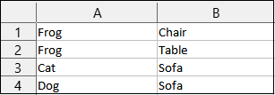
Drop-down and Conditional Drop-down Menus (Green): These fields have a drop-down menu which contain the values that can be entered. These valuess can be selected or typed in. In conditional drop-down menus, the valuess depend on what you entered in a previous field.
Free form (Blue): In these fields, there are no restrictions on how to enter your data.
2) How to report methods:
In this guide you will learn how to enter Methods into the Method Sets and Methods Step templates. As described in , a Method is “A procedure for collecting a sample or performing a measure”. A Method Set is essentially a Method . In the Method Sets template, each entry is a step in a Method Set (a step will be defined shortly).
A Method Set is made up of steps, called Method Steps. In the Method Steps template, each entry represents one of these steps. A key thing to note is that a step can be a Method or a Measure. An individual step can also be used in multiple Method Sets.
For instance, you might have a Method Set for an extraction procedure. This set will have multiple steps that go through this process.
For further information regarding terms and the colour-coding of columns that you will see, please refer to the beginning of this guide (1) How to use templates) and
Quick Start
Below you will find the fields that are mandatory for the Method Steps and Method Sets template. You will also find some examples of entries of data, with the fields filled and colour-coded. A more detailed description of some of the key concepts can be found in the following section, “Detailed Description”.
Method Steps Template
- Mandatory fields
| Method Step ID | Method (if entering a Method) |
| Measure (if entering a Measure) | Name |
| Value (if entering a Measure) | Unit (if entering a Measure) |
| Aggregation (if entering a Measure) |
- Definitions
Method Step ID: The unique identifier for a specific method step.
Method: A procedure for collecting a sample or performing a measure.
Measure: A measurement or observation of any substance including a biological, physical or chemical substance.
Name: Name of the entity.
Value: Value of a measure, observation or attribute.
Unit: The units of a measurement.
Aggregation: Statistical measures used to report a measure. Each aggregation has a corresponding value.
- Examples
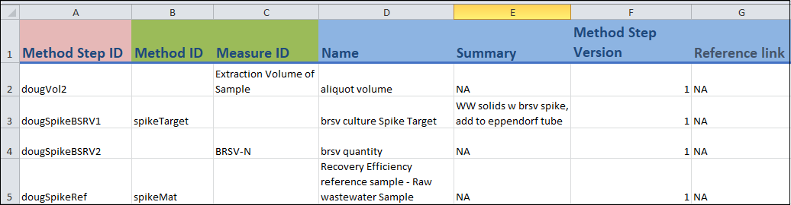
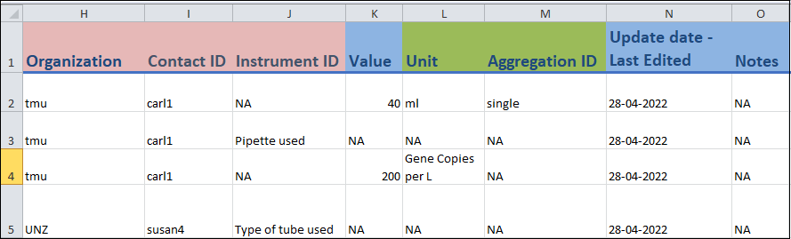
Method Sets Template
- Mandatory fields
| Method Set Report ID | Method Set ID |
| Method Step ID | Method Step Index |
- Definitions
Method Set Report ID: Unique identifier for a method set.
Method Set ID: A unique identifier for a given method set.
Method Step ID: The unique identifier for a specific method step.
Method Step Index: Specifies the index of a method step within a method set, i.e. the order of the steps in a set.
- Examples
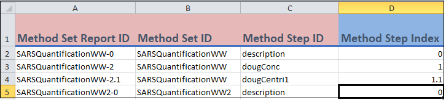
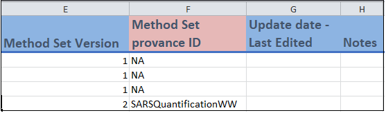
Detailed Description
Method Steps Template
Columns A to G
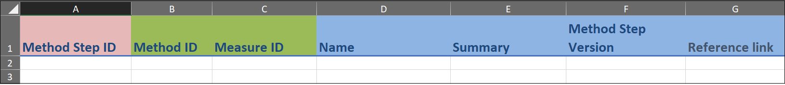
- Column A:
- Method Step ID (column A) is the Unique Identifier field for this template and cannot be repeated between entries. You can think of each Method Step ID value as representing a unique Method Step.
- Columns B to C:
These are Drop-down Menu fields.
You only need to enter a value into Method ID (column B) or Measure ID (column C). The former is for when you are entering a Method and the latter is for a Measure. Leave the other field blank.
- Columns D to G:
- These are Free Form fields and you can enter the relevant information in any format that you wish.
- Name (column D) refers to
- Summary (column E) is a short description of the Method Step that you are entering
- Method Step Version (column F) refers to whether or not you have multiple version of this Step. If you do, then you can differentiate the different versions with “1”, “2”, etc.
- Column A:
Columns H to O
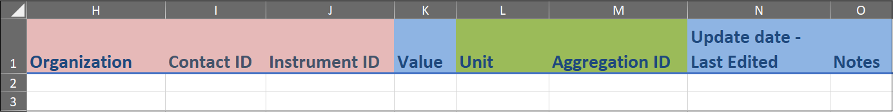
- Columns H to J:
- These are Identifier fields.
- You can repeat values between entries. For instance, if you are entering two different Method Steps from the same Organization, then “Organization” (column H) will be the same.
- You may have already created these Identifiers in another template. For instance you may have created “Organization” in the Organizations Template.
- Column K:
- A Free Form field in which you will enter the Value of the Measure. If a Method is being entered, then you can put “NA” here.
- Columns L and M:
These are Conditional Drop-down Menu fields.
Unit (column L) depends on what you entered in Measure ID (column C). If you entered a Method, then you can put “NA” in this field.
Aggregation (column M) depends on what you entered in Unit (column L). If you entered a Method, then you can put “NA” in this field.
- Columns N and O:
- These are Free Form fields where you will enter values for the indicated fields.
- Columns H to J:
Method Sets Template
Columns A to D
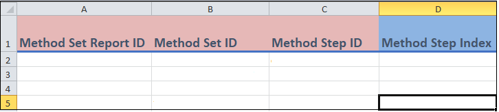
- Columns A to D:
Method Set Report ID (column A) is the Composite Unique Identifier field for this template.
This value is automatically generated by the template by combining Method Set ID (column B) and Method Step Index (column D). It is important that you ensure that any combination of these two fields are not repeated.
Each Method Set Report ID value represents a Step within a Method Set.
Method Set ID (column B) and and Method Step ID (column C) are Identifier fields.
Method Step Index (column D) is a Free Form field and indicates the position of the Method Step in its Method Set. For instance, if the Method Step being entered is the third step in the Method Set, then this value would be “3”.
- Columns A to D:
Columns E to H
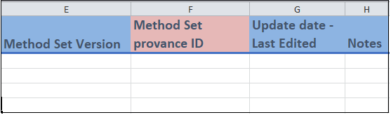
- Columns E to F:
Method Set Version (column E) is a Free Form field where you will indicate the version of the Method Set. For instance, if the current Method Set that you are entering is an updated version of the original one, you would enter “2”.
Method Set Provenance ID (column F) is the Method Set that the one that is being entered is based upon. Thus, you would enter “NA” here unless the value of Method Set Version is 2 or greater.
- Columns G to H:
- These are free form fields and you can enter the relevant information in any format that you wish.
- Columns E to F:
You have now entered your data in the Method Steps and Methods Sets Template, congratulations!
3) How to report measures:
In this guide you will learn how to enter Measures into the Measures and Measures Set template. Each entry in this template represents a Measure. As described in , a Measure is a “measurement or observation of any substance including a biological, physical or chemical substance”. You will enter individual Measures into the Measures Template. You can then group certain Measures together and this will be entered into the Measure Sets template. For further information regarding terms and the colour-coding of columns that you will see, please refer to the beginning of this guide (1) How to use templates) and
Quick Start
Below you will find the fields that are mandatory for these templates. You will also find some defintion of terms and examples of entries of data, with the fields filled and colour-coded. A more detailed description of some of the key concepts can be found in the following section, “Detailed Description”.
Measures Template
- Mandatory fields
| Measure Report ID | Sample ID |
| Site ID | Analysis Date End Value |
| Specimen | Fraction analyzed (only if Specimen ID = “Sample”) |
| Measure | Value |
| Unit | Aggregation |
- Definitions
Measure Report ID: Unique identifier for a measure.
Sample ID: Unique identifier for a sample.
Site ID: Unique identifier for the location where a sample was taken.
Analysis Date End: Date the measurement or analysis was completed.
Specimen: The substance or thing upon which the observation was made.
Fraction analyzed: Fraction of the sample that is analyzed.
Measure: A measurement or observation of any substance including a biological, physical or chemical substance.
Value: Value of a measure, observation or attribute.
Unit: The units of a measurement.
Aggregation: Statistical measures used to report a measure. Each aggregation has a corresponding value.
- Examples
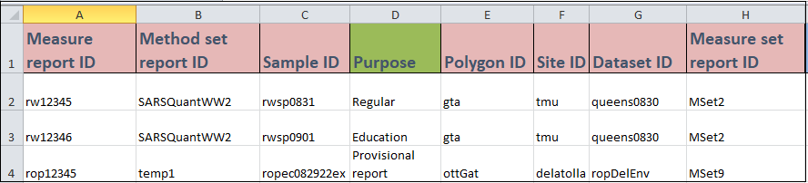
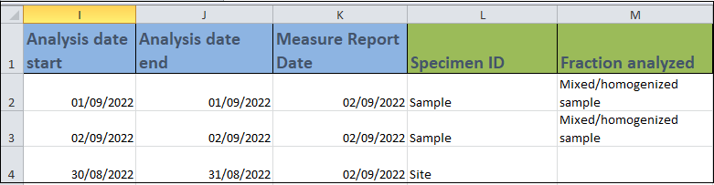
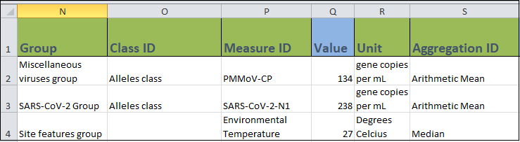
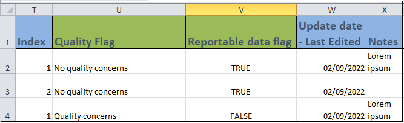
Measure Sets Template
- Mandatory fields
| Report Set ID | Method Set Report ID |
- Definitions
Report Set ID: Unique identifier that links together a group of related measures.
Method Set Report ID: Unique identifier for a method set.
Examples
Image will be added.
Detailed Description
Measures Template
Columns A to H
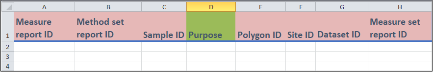
Columns A-C, and E-H
- These are all Identifier fields.
- “Report ID” (column A) is the Unique Identifier for this template, and cannot be repeated between entries. In essence, each value of “Report ID” represents a unique Measure.
- For the rest, you can repeat the Identifer between entries (if needed). For instance, if you are entering two different Measures from the same Sample, then the “Sample ID” (column C) will be the same.
- You may have already created these Identifiers in another template. For instance you may have created “Sample ID” in the Samples Template.
Column D
- This is a Drop-down Menu field in which you can select a value representing the Purpose of your Measure from the menu.
Columns I to M
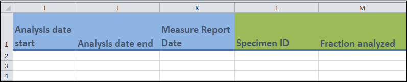
- Columns I to K
- These are all Free Form fields where you can enter various dates associated with your Measure.
- Columns L and M
- These are Drop-down Menu fields where you can select a value that represents the Specimen, and the Fraction of the Samples that was analyzed for your Measure.
- Columns I to K
Columns N to S
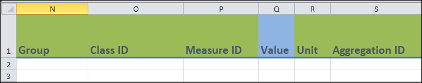
- Columns N and O
These are Drop-down Menu fields which contain the possible values for Group and Class, respectively, of the Measure that you are entering.
Group and Class are not mandatory, so if you do not know them, leave these fields blank. .
- Column P
This is a Conditional Drop-down Menu fields where you will enter the Measure of your entry.
If you chose to enter in a “Class ID” (column O), the drop down menu will contain the Measures found in that Class. If you did not enter a value in column O, the menu will contain all possible Measures.
- Column Q
This is a Free Form field, where you will enter in the Value of your Measure.
For instance, if your Measure is a temperature of 20 oC, you would enter “20”.
- Column R
This is a Conditional Drop-down Menu field where you will choose the Units of your Value.
Using the temperature example in the previous point, it would be “Celcius”. What appears in this menu depends on what you entered in the “Measure ID” field (column P).
- Column S
This is a Conditional Drop-down Menu field which contains the types of Aggregations of your value. For example does your value represent a mean, median, etc.
What appears in this menu depends on what you entered in the Unit field (column Q).
- Columns N and O
Columns T and W
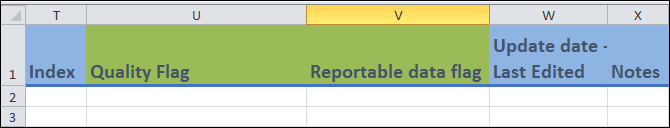
- Columns T, W and X
- These are Free Form fields in which you can enter the indicated information.
- Index (column T) is used if you have multiple entries with the exact same values in the other fields. If this is the case you could use “1”, “2”, etc. to differentiate them.
- Columns U and V
These columns consist of a Conditional Drop-down Menu field (Quality Flag) and a Drop-down Menu field (Reportable Data Flag).
“Quality Flag” depends on the value of “Measure” (column P). You can use this to indicate it there are any quality issues with the Measure.
“Reportable” refers to whether or not your entry is of good enough quality that it can be used by others.
- Columns T, W and X
Measure Sets Template
Columns A to H
Columns A, B, E and F
- These are all Identifier fields.
- “Set Report ID” (column A) is the Unique Identifier for this template, and cannot be repeated between entries. In essence, each value of “Set Report ID” represents a unique Measure Set.
- For the rest, you can repeat the Identifer between entries (if needed). For instance, if you are entering two different Measure Sets that came from the same Organization, then the “Organization ID” (column E) will be the same.
- You may have already created these Identifiers in another template. For instance you may have created “Organization ID” in the Organizations Template.
Column D
- This is a Drop-down Menu field in which you will choose from the menu the type of Measure Set that you are entering.
Columns C, G and H
- These are all Free Form fields in which you can enter in information in any format that you wish.
- “Name” (Column C) refers to .
You have now entered your data in the Measures and Measure Sets Template, congratulations!
4) How to report samples:
In this guide you will learn how to enter Samples through the Samples template. So, each entry in this template represents a Sample. As described in , a Sample is ” ” .
For further information regarding terms and the colour-coding of columns that you will see, please refer to the beginning of this guide (1) How to use templates) and
Quick Start
Below you will find the fields that are mandatory for the Samples template. You will also find some examples of entries of data, with the fields filled and colour-coded. A more detailed description of some of the key concepts can be found in the following section, “Detailed Description”.
- Mandatory fields
| Sample ID | Site ID |
| Sample Material | Sample Collection |
| Collection Period | Collection Number |
| Collection Date Time |
- Definitions
Sample ID: Unique identifier for a sample.
Site ID: Unique identifier for the location where a wastewater sample was taken.
Sample Material: Type of sample.
Sample Collection: Method used to collect the sample.
Collection Period: Value of a measure, observation or attribute.
Collection Number: The number of subsamples that were combined to create the sample. Use NA for continuous, proportional or passive sampling.
Collection Date Time: The date, time and timezone the sample was taken.
- Examples
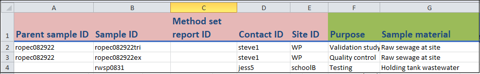
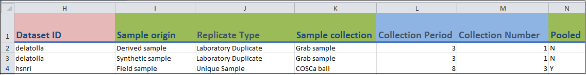
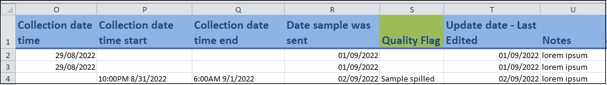
Detailed Description
Columns A to G
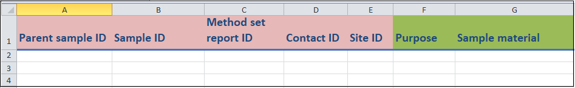
Columns A to E:
These are Identifier fields.
Sample ID (column A) is the Unique Identifier for this template and cannot be repeated between entries. You can think of each Sample ID value as representing a unique Sample.
For the rest of the fields, you can repeat values between entries. For instance, if you are entering two different Samples from the same Site, then the “Site ID” (column E) will be the same.
You may have already created these Identifiers in another template. For instance you may have created “Site ID” in the Sites Template.
Columns F to G:
- These are Drop-down Menu fields where you can enter information regarding the Purpose and Sample Material of your Sample.
Columns H to N
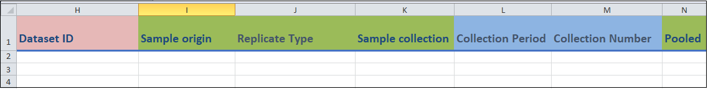
- Columns H:
- These is an Identifier field for the Dataset that your Sample is associated with.
- Columns I to K, N:
These are Drop-down Menu fields related to various characteristics of your Sample.
Sample collection (column K) refers to the collection technique used to obtain the Sample that you are entering.
Pooled (column N) refers to whether or not the Sample that you are entering is made up of multiple child Samples.
- Columns L and M:
- These are Free Form fields.
- Collection Period (column L) refers to the number of hours that it took to collect your Sample.
- Collection Number (column M) refers to the number of subsamples that were used to create Sample that you are entering.
- Columns H:
Columns O to U
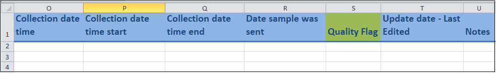
- Columns O to R, T to U:
These are Free Form fields.
Most are related to various dates associated with your Sample.
- Column S:
- This is a Drop-down Menu field.
- You can use this field to indicate if there are any quality issues with the Sample.
- Columns O to R, T to U:
You have now entered your data in the Samples Template, congratulations!
How to report metadata:
In this guide you will learn how to enter Metadata through a series of 8 templates. Each entry in a template will usually represent the the title of the template. For instance, in the Organizations template each row will represent an Organization. Metadata is data that gives information about other data. In the context of the PHES-ODM, metadata is anything that gives additional information about Measures, Methods and Samples.
For further information regarding terms and the colour-coding of columns that you will see, please refer to the beginning of this guide (1) How to use templates) and
Quick Start
Below you will find the fields that are mandatory for the metadata-related templates. You will also find some examples of entries of data, with the fields filled and colour-coded. A more detailed description of some of the key concepts can be found in the following section, “Detailed Description”.
Addresses Template
- Mandatory fields
| Address ID | Dataset ID |
| Address Line 1 | City |
| State, Province or Region | Country |
- Definitions
Address ID: A unique identifier for an address.
Dataset ID: The name of the dataset that stores information for Measures, Samples and other reporting tables.
Address Line 1: Line 1 (the street name, number and direction) for a given address.
City: The city where a site or organization is located; part of the address.
State, Province or Region: The state, province, or region where a site or organization is located; part of the address.
Country: The country where a site or organization is located; part of the address.
- Examples
Images will be added
Contacts
- Mandatory fields
| Contact ID | Organization ID |
| Contact email |
- Definitions
Contact ID: A unique identifier for a given contact person.
Organization ID: A unique identifier for the organization to which the reporter is affiliated.
Email: Contact e-mail address, for the lab.s.
- Examples
Images will be added
Detailed Description
Addresses Template
Columns A to H
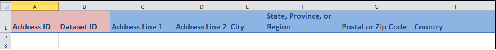
Columns A and B:
These are Identifier fields.
“Address ID” (column A) is the Unique Identifier for this template, and cannot be repeated between entries. In essence, each value of “Address ID” represents a unique Address.
For column B (Dataset ID), you can repeat the value between entries (if needed). For instance, if you are entering two different Addresses from the same DataSet, then this column will be the same.
You may have already created the Dataset ID in the Datasets Template.
Columns C to H:
- These are Free-form fields in which you can enter various information regarding the Address.
Contacts Template
Columns A to D
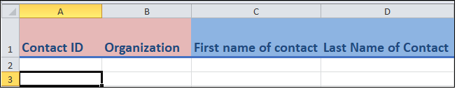
Columns A and B:
These are Identifier fields.
“Contact ID” (column A) is the Unique Identifier for this template, and cannot be repeated between entries. In essence, each value of “Contact ID” represents a unique Contact.
For column B (Organization ID), you can repeat the value between entries (if needed). For instance, if you are entering two different Contacts from the same Organization, then this column will be the same.
You may have already created the Organization ID in the Organizations Template.
Columns C to D:
- These are Free-form fields in which you can enter the name of the Contact.
Columns E to I
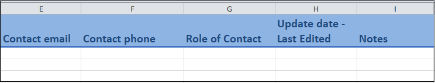
Columns E and I:
- These are Free-form fields in which you can enter various information regarding the Contact.